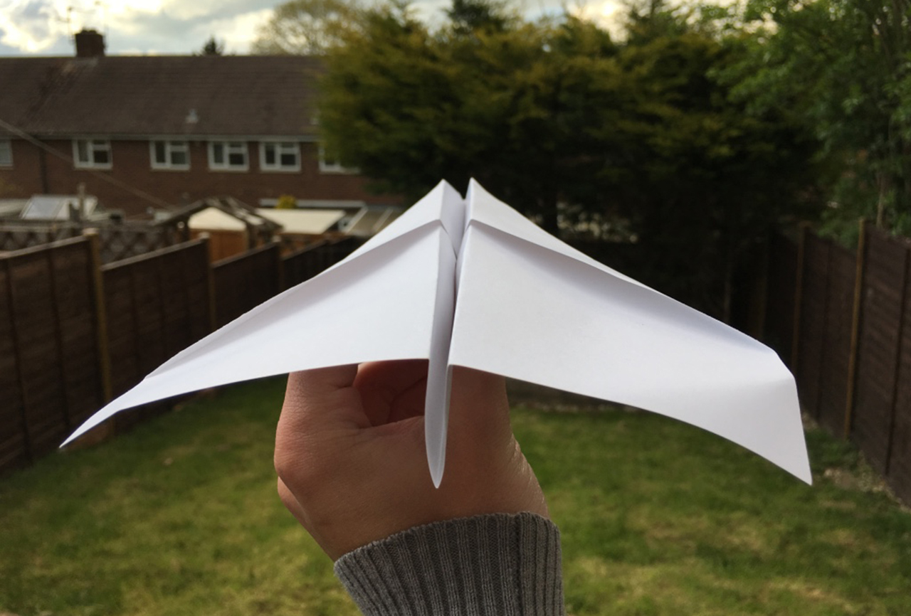
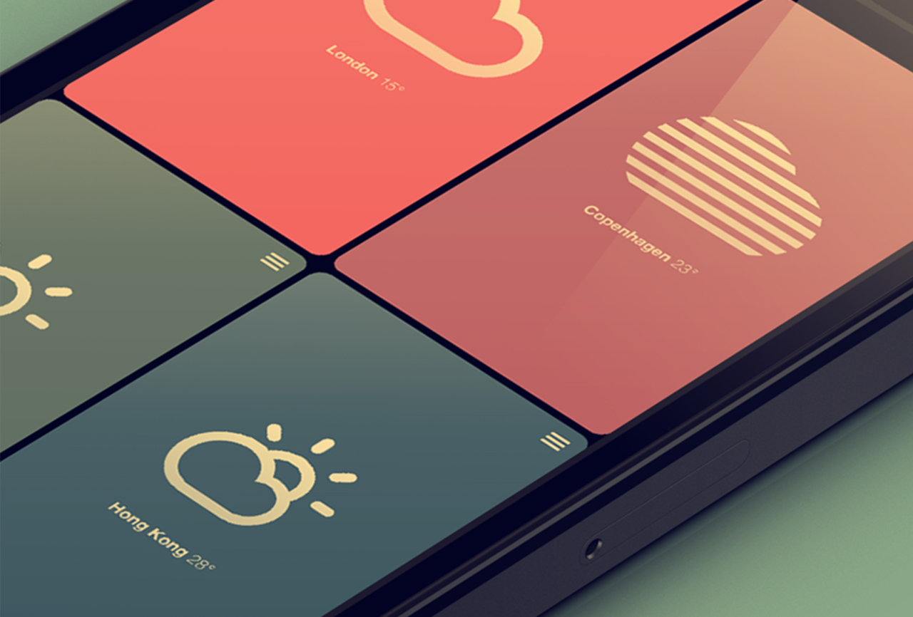

Origami
Web Application

The main project that i've been working on this semester is a web app called 'Origami'. The goal has been to design and develop an active web application primarily for use with smartphones. This has thouroughly tested my abilities as a visual designer in various areas such as user interface, user experience and illustration.
The purpose of this project has been to challenge my self in an area of design that most interests me (e.g. apps). Rather than producing static concepts I set part of my goal to create something active. The digital design industry is continuously evolving and gave me inspiration to move out of my comfort zone by attempting something new. Challenging my self will also assist me in acheiving my learning outcomes for the semester and provide me with some skills that could be useful when entering the design industry.
Initial Idea
The basic idea for this project came from my habbit of folding paper planes. The challenge that I set my self was to create an iOS or web app. The function of the app could teach users to create various models of planes using paper. When researching paper plane tutorials across the web there were various sites featuring origami. This inspired me to push the idea a little further and base it around other types of origami.
Research
YouTube was my primary resource for learning to create origami. There are also various origami websites across the web that generally include photo and video instructions. Some even provided illustrated instructions that can easily be found on google images.
On the app store there are some origami apps that feature illustrated instructions. The most successful app is called 'How To Make Origami'. The instructions in the app are quite clear and feature a wide variety of origami objects to create. However, some of the negatives about this app include: an excessive amount of adverts, limited amount of origami unless the pro version is purchased and instructions have to be downloaded with the app.
Throughout the design process I referenced various sites such as Dribble, Behance and Apple. Some of the user interface designs on both dribbble and behance gave my designs inspiration in areas such as colour, buttons, layout, fonts etc. One of the best sites I used as a guide for creating a successful user interface is featured on Apple, UI Design Do's and Dont's. The guide covers a variety of areas in UI such as formatting content, text size, spacing, alignment etc.
The above image is one of the user interface designs that I used for inspiration in my own designs. It features a simple and clear tile layout with very subtle colour variations. One particular aspect of the design that I used in my own is the two tone colour icons. For example, this design features only white icons with various colour tiles.
Development
The finalized idea to be developed is an origami web app with simple illustrated instructions. The goals behind the app are to challenge my skills as a designer and produce something that any user can use for free.

The design and development of this project began with some simple sketches of origami from observation. These were designed to be used as icons for each origami that will be featured in the app. Once finished they were vectorized in illustrator.
The illustrated icons are designed to be simplified versions of how each object would appear in real life. This meant using a very small amount of colour and tones to make them look realistic.
Outcome